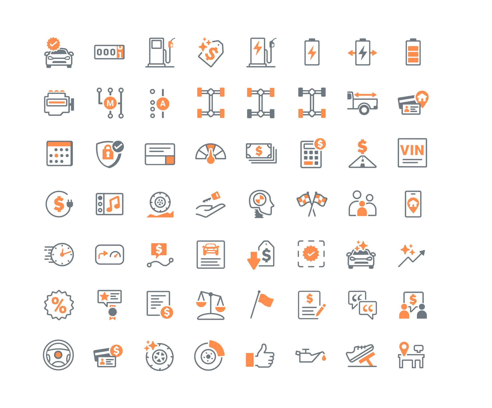
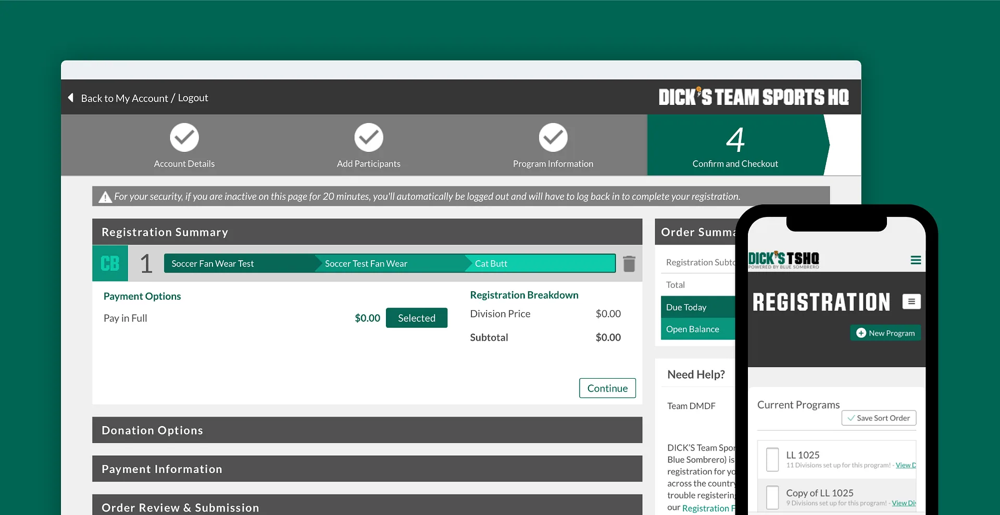
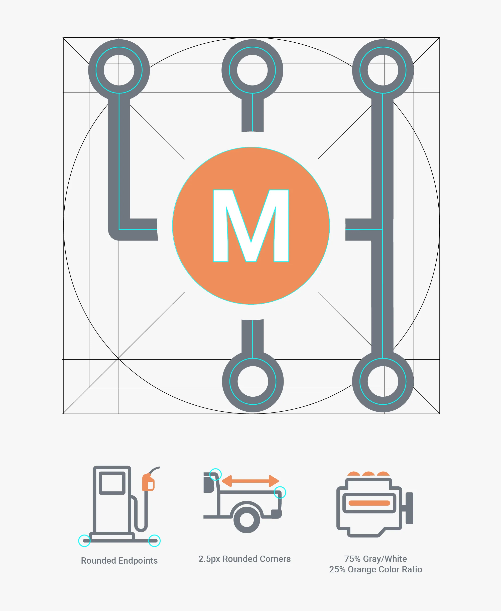
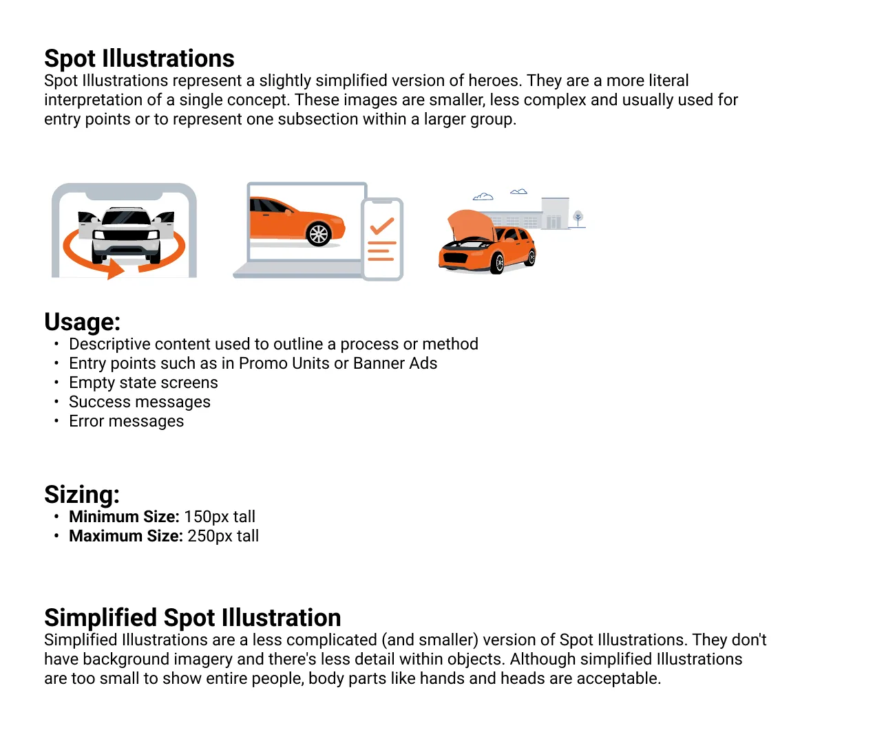
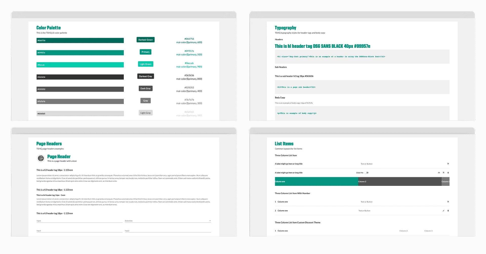
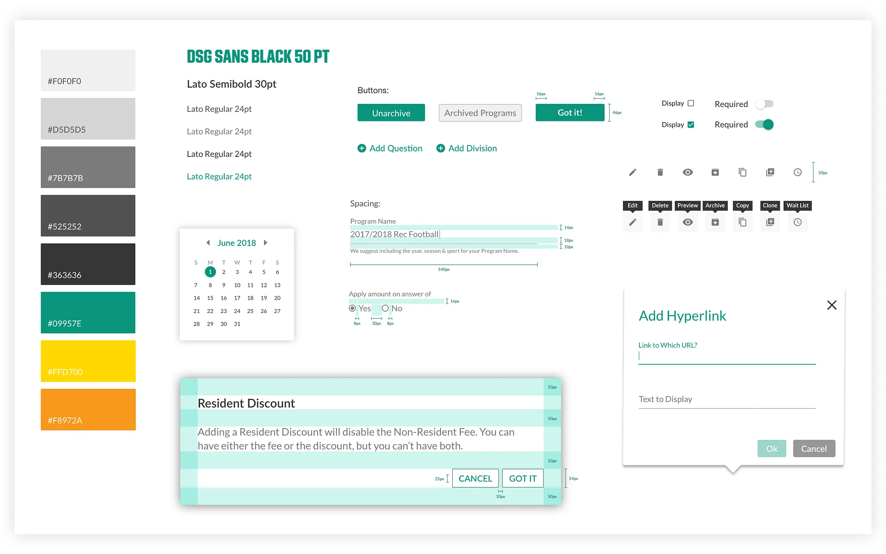
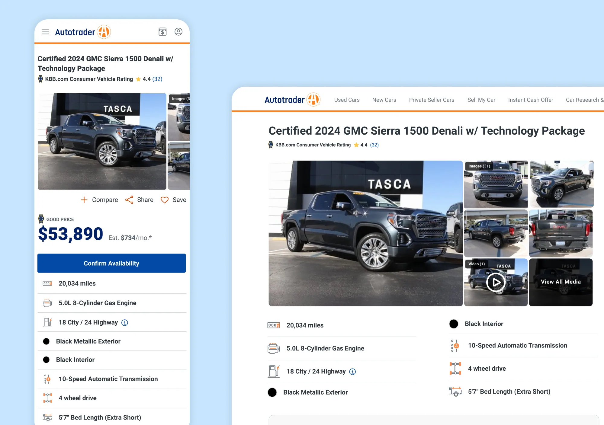

Design Systems

Products grow faster than their design language. Across Autotrader, Kelley Blue Book, and DICK'S TSHQ, I've turned that fragmentation into systems: foundations, rules, and libraries that teams can build on without asking permission.
The Problem
Nobody decides to make a mess. At Autotrader, icons drawn by many hands over many years left three styles sharing a single screen. At TSHQ, each season bolted new features onto registration until no two flows matched. Fragmentation isn't a choice anyone makes — it accumulates one deadline at a time, and every team pays the tax: slower design, longer QA, and a product that feels stitched together.

Years of bolted-on features, no shared source of truth.
A design system isn't consistency for its own sake — it's letting teams spend their decisions where users actually feel them.
Start With Foundations
Every system starts below the component level: grids, keyshapes, orthogonals, type scales, color ramps, spacing. For Autotrader's icon language I reverse-engineered a 1px grid with a 1.5px trim area, orthogonals at 90°, 45°, and 15°, and a fixed 75/25 color ratio. Get the foundations right and a hundred future decisions become automatic; get them wrong and every component inherits the debt.

Construction rules every icon inherits: rounded endpoints, 2.5px corners, one color ratio.
Explore Fast, Decide With Evidence
Explorations are cheap; standards are expensive. I move through directions quickly — side by side, in context, at real size — then pressure-test the survivors with the people who will live with them: designers, developers, and stakeholders. The direction that becomes the standard is the one that holds up on a real screen, not the one that looks best on a poster.
Write Down the Rules
Assets aren't a system — decisions are. Every foundation ships with documentation: what it's for, how to extend it, and, most consulted of all, what not to do. For TSHQ, we defined type, color, spacing, and component behavior in one shared reference built directly with developers, cutting ambiguity between design and dev and accelerating QA.


The TSHQ design system: palette, type, and components in one shared reference.

Redlines developers can build from without a meeting.
A system is finished when someone who has never met you can extend it correctly.
The System, Shipped
The proof is in the product. At Autotrader, one unified icon library replaced years of accumulated drift across search, wallet, and vehicle pages. At TSHQ, the design system carried a six-step registration redesign across mobile and desktop without the UI splintering. Same components, same rules, everywhere users look.

One language across the product — no screen left behind.
Go Deeper
Full case studies: Autotrader Iconography, the Autotrader Illustration System, and the TSHQ Registration Redesign.